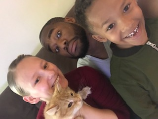

Family
My wife and I met in college back in 2013. We were both in Acting 1 and soon after started dating. We married on November 23rd, 2013. Our son was born soon after.
Evan is going to the 1st grade in the fall of 2020 and he will be 7 in the month of february. My son loves to wake up super early in the morning, video games, and watching YouTube.
Favorite Hobby
I've had a passion for cooking at a really young age. I was 5 when I accidentally sent my brother to the hospital by trying to cook french toast while my mother was sleep. I put a glass bowl over a really hot burner and lets just say he was a little to close to the bursting bowl. He didn't have any major injuries.
Gordong Ramsay would not have been happy with my poor actions. Today I am cooking ramen noodles from scratch, home made general tso chicken, and poaching eggs. I am a proud home chef.